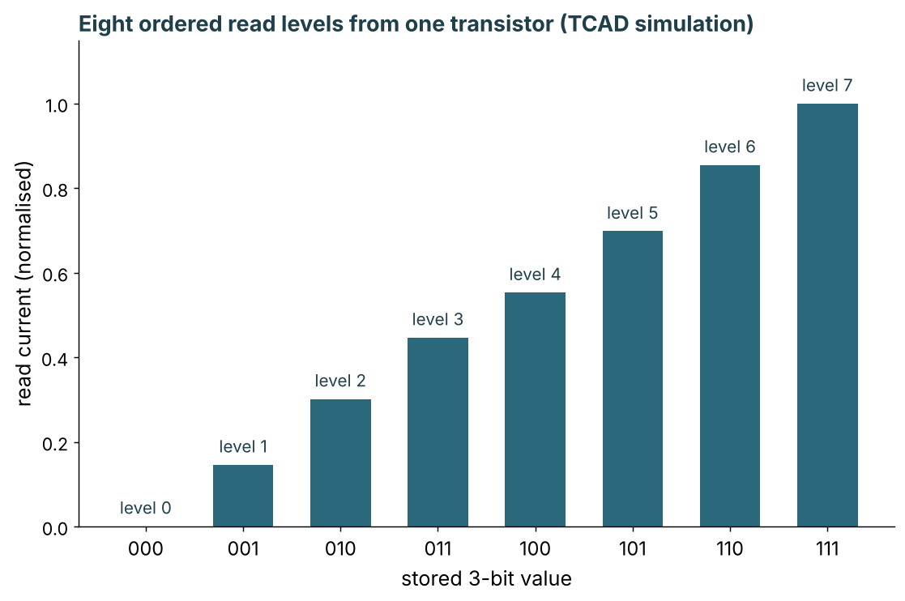

MBCFET-FeFET: a ferroelectric nanosheet transistor for multi-bit memory and in-memory computing
A ferroelectric gate-all-around nanosheet transistor concept that stores 3 bits and computes a three-input weighted sum inside a single transistor (TCAD simulation study; journal article in preparation).
| Type | Device concept and TCAD simulation study |
| Role | Lead researcher: device concept, simulation campaign, analysis |
| Affiliation | Department of Electrical and Electronic Engineering, BRAC University |
| Tool | Silvaco Atlas (2D and 3D device simulation) |
| Period | 2026 |
| Status | Simulation campaign complete; journal article in preparation |
The Device
Modern transistors stack several silicon nanosheet channels under one shared gate to carry more current in the same area. In conventional designs every channel is identical, so stacking adds current but no new function.
The MBCFET-FeFET is a ferroelectric version of this stacked-nanosheet transistor with three channels under one gate. It is designed so that the three channels act as three independent memory elements that are read together and can be addressed separately. The result is a single transistor footprint that works as a multi-bit memory cell and as a small computing element.
It has four functions in one structure:
| Function | What the device does |
|---|---|
| Multi-bit memory | Stores 3 bits; one read gives all three |
| Selective write | Each stored bit can be written without disturbing the others |
| In-memory computing | Multiplies three inputs by the stored weights and adds the results |
| Analog synapse | Its stored weight can be raised and lowered gradually |
Design parameters and the operating scheme are withheld until publication.
Results (TCAD simulation)
Eight ordered read levels: 3 bits from one transistor
The eight possible stored values give eight distinct read-current levels, in order, in a single read. The ordering is kept at every simulated process corner and through nine robustness checks, including operation at 400 K.

Each bit can be written on its own
A selective-write scheme isolates the channel being written from the other two. In simulation, the selected channel was unaffected and the other two were fully protected in all 36 of 36 tested cases.
Multiply and add inside the transistor
Used as a computing element, the device produces an output equal to a weighted sum of its three inputs, output = w1·x1 + w2·x2 + w3·x3, where the weights w are what the device has stored and x are the inputs. In 3D simulation the sum matches its parts within 0.2 % and the response is linear within 1.1 % over the specified input range. This weighted sum is the basic operation of a neural network layer, performed here by the same structure that stores the weights.
An analog synapse
The stored weight changes smoothly and monotonically with the programming pulse, in both directions, over a read-current range of more than three orders of magnitude.
Model calibrated to measured silicon
The simulation model is calibrated with a single constant to a published, measured ferroelectric transistor (Liao et al., IEEE Electron Device Letters, 2021), reproducing its four measured threshold states and its memory window. That constant is then used unchanged for all results.
What Was Achieved
- A new device concept. To our knowledge, this is the first design that gives the parallel channels of a stacked-nanosheet ferroelectric transistor individual roles under one shared gate.
- 3 bits in one transistor footprint. Eight ordered read levels in simulation, read in a single measurement.
- Selective writing of each bit. Confirmed in 36 of 36 simulated cases.
- Memory and computing in the same device. A three-input multiply-accumulate inside the transistor, additive within 0.2 % and linear within 1.1 % in 3D simulation.
- Analog synaptic behaviour. Monotonic increase and decrease of the stored weight.
- A design that holds under variation. Level ordering kept at all simulated process corners and in nine of nine robustness checks.
- A complete, calibrated simulation campaign. Eighteen simulation steps on one frozen design, with the model anchored to measured data from the literature.
Publication
- A. H. Shawn et al. Journal article on the MBCFET-FeFET (TCAD study). In preparation.
Full design details, operating conditions and quantitative results will be made available with the journal publication.
Reference. C.-Y. Liao et al., "Multibit Ferroelectric FET Based on Nonidentical Double HfZrO2 for High-Density Nonvolatile Memory," IEEE Electron Device Letters, vol. 42, no. 4, pp. 617-620, 2021. DOI 10.1109/LED.2021.3060589. (Source of the measured data used for model calibration.)
Related: R-02 MBCFET Modeling.